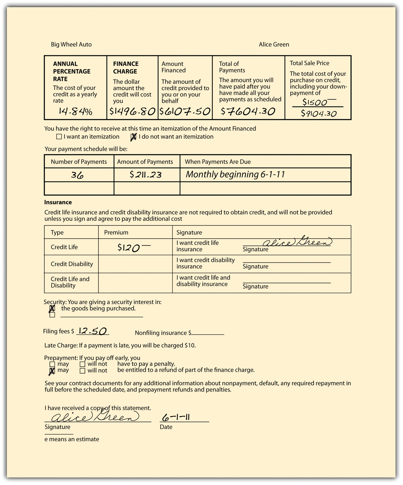

After reading this chapter, you should understand the following:
This chapter and the three that follow are devoted to debtor-creditor relations. In this chapter, we focus on the consumer credit transaction. Chapter 33 "Secured Transactions and Suretyship" and Chapter 34 "Mortgages and Nonconsensual Liens" explore different types of security that a creditor might require. Chapter 35 "Bankruptcy" examines debtors’ and creditors’ rights under bankruptcy law.
The amount of consumer debt, or household debtDebt owed by consumers., owed by Americans to mortgage lenders, stores, automobile dealers, and other merchants who sell on credit is difficult to ascertain. One reads that the average household credit card debt (not including mortgages, auto loans, and student loans) in 2009 was almost $16,000.Ben Woolsey and Matt Schulz, Credit Card Statistics, Industry Statistics, Debt Statistics, August 24, 2010, http://www.creditcards.com/credit-card-news/credit-card-industry-facts-personal-debt-statistics-1276.php. This is “calculated by dividing the total revolving debt in the U.S. ($852.6 billion as of March 2010 data, as listed in the Federal Reserve’s May 2010 report on consumer credit) by the estimated number of households carrying credit card debt (54 million).” Or maybe it was $10,000.Deborah Fowles, “Your Monthly Credit Card Minimum Payments May Double,” About.com Financial Planning, http://financialplan.about.com/od/creditcarddebt/a/CCMinimums.htm. Or maybe it was $7,300.Index Credit Cards, Credit Card Debt, February 9, 2010, http://www.indexcreditcards.com/creditcarddebt. But probably focusing on the average household debt is not very helpful: 55 percent of households have no credit card debt at all, and the median debt is $1,900.Liz Pulliam Weston, “The Big Lie about Credit Card Debt,” MSN Money, July 30, 2007.
In 2007, the total household debt owed by Americans was $13.3 trillion, according to the Federal Reserve Board. That is really an incomprehensible number: suffice it to say, then, that the availability of credit is an important factor in the US economy, and not surprisingly, a number of statutes have been enacted over the years to protect consumers both before and after signing credit agreements.
The statutes tend to fall within three broad categories. First, several statutes are especially important when a consumer enters into a credit transaction. These include laws that regulate credit costs, the credit application, and the applicant’s right to check a credit record. Second, after a consumer has contracted for credit, certain statutes give a consumer the right to cancel the contract and correct billing mistakes. Third, if the consumer fails to pay a debt, the creditor has several traditional debt collection remedies that today are tightly regulated by the government.
Lenders, whether banks or retailers, are not free to charge whatever they wish for credit. UsuryCharging interest in excess of the legal limit. laws establish a maximum rate of lawful interest. The penalties for violating usury laws vary from state to state. The heaviest penalties are loss of both principal and interest, or loss of a multiple of the interest the creditor charged. The courts often interpret these laws stringently, so that even if the impetus for a usurious loan comes from the borrower, the contract can be avoided, as demonstrated in Matter of Dane’s Estate (Section 32.3 "Cases").
Some states have eliminated interest rate limits altogether. In other states, usury law is riddled with exceptions, and indeed, in many cases, the exceptions have pretty much eaten up the general rule. Here are some common exceptions:
And there are others. Moreover, certain charges are not considered interest, such as fees to record documents in a public office and charges for services such as title examinations, deed preparation, credit reports, appraisals, and loan processing. But a creditor may not use these devices to cloak what is in fact a usurious bargain; it is not the form but the substance of the agreement that controls.
As suggested, part of the difficulty here is that governments at all levels have for a generation attempted to promote consumption to promote production; production is required to maintain politically acceptable levels of employment. If consumers can get what they want on credit, consumerism increases. Also, certainly, tight limits on interest rates cause creditors to deny credit to the less creditworthy, which may not be helpful to the lower classes. That’s the rationale for the usury exceptions related to pawnshop and payday loans.
Setting limits on what credit costs—as usury laws do—is one thing. Disclosing the cost of credit is another.
Until 1969, lenders were generally free to disclose the cost of money loaned or credit extended in any way they saw fit—and they did. Financing and credit terms varied widely, and it was difficult and sometimes impossible to understand what the true cost was of a particular loan, much less to comparison shop. After years of failure, consumer interests finally persuaded Congress to pass a national law requiring disclosure of credit costs in 1968. Officially called the Consumer Credit Protection Act, Title I of the law is more popularly known as the Truth in Lending ActA federal act ensuring that every individual who has need for consumer credit is given full disclosure of the terms and cost of the credit. (TILA). The act only applies to consumer credit transactions, and it only protects natural-person debtors—it does not protect business organization debtors.
The act provides what its name implies: lenders must inform borrowers about significant terms of the credit transaction. The TILA does not establish maximum interest rates; these continue to be governed by state law. The two key terms that must be disclosed are the finance charge and the annual percentage rate. To see why, consider two simple loans of $1,000, each carrying interest of 10 percent, one payable at the end of twelve months and the other in twelve equal installments. Although the actual charge in each is the same—$100—the interest rate is not. Why? Because with the first loan you will have the use of the full $1,000 for the entire year; with the second, for much less than the year because you must begin repaying part of the principal within a month. In fact, with the second loan you will have use of only about half the money for the entire year, and so the actual rate of interest is closer to 15 percent. Things become more complex when interest is compounded and stated as a monthly figure, when different rates apply to various portions of the loan, and when processing charges and other fees are stated separately. The act regulates open-end credit (revolving credit, like charge cards) and closed-end credit (like a car loan—extending for a specific period), and—as amended later—it regulates consumer leases and credit card transactions, too.
Figure 32.1 Credit Disclosure Form
By requiring that the finance charge and the annual percentage rate be disclosed on a uniform basis, the TILA makes understanding and comparison of loans much easier. The finance chargeThe total cost of credit a customer must pay on a consumer loan, including interest. is the total of all money paid for credit; it includes the interest paid over the life of the loan and all processing charges. The annual percentage rate is the true rate of interest for money or credit actually available to the borrower. The annual percentage rate must be calculated using the total finance charge (including all extra fees). See Figure 32.1 "Credit Disclosure Form" for an example of a disclosure form used by creditors.
The Consumer Leasing Act (CLA) amends the TILA to provide similar full disclosure for consumers who lease automobiles or other goods from firms whose business it is to lease such goods, if the goods are valued at $25,000 or less and the lease is for four months or more. All material terms of the lease must be disclosed in writing.
In 1989, the Fair Credit and Charge Card Disclosure Act went into effect. This amends the TILA by requiring credit card issuers to disclose in a uniform manner the annual percentage rate, annual fees, grace period, and other information on credit card applications.
The 1989 act did make it possible for consumers to know the costs associated with credit card use, but the card companies’ behavior over 20 years convinced Congress that more regulation was required. In 2009, Congress passed and President Obama signed the Credit Card Accountability, Responsibility, and Disclosure Act of 2009 (the Credit Card Act). It is a further amendment of the TILA. Some of the salient parts of the act are as follows:
The Federal Reserve Board is to issue implementing rules.
Creditors who violate the TILA are subject to both criminal and civil sanctions. Of these, the most important are the civil remedies open to consumers. If a creditor fails to disclose the required information, a customer may sue to recover twice the finance charge, plus court costs and reasonable attorneys’ fees, with some limitations. As to the Credit Card Act of 2009, the issuing companies were not happy with the reforms. Before the law went into effect, the companies—as one commentator put it—unleashed a “frenzy of retaliation,”Liz Pulliam Weston, “Credit Card Lenders Go on a Rampage,” MSN Money, November 25, 2009. by repricing customer accounts, changing fixed rates to variable rates, lowering credit limits, and increasing fees.
The federal TILA is not the only statute dealing with credit disclosures. A uniform state act, the Uniform Consumer Credit Code, as amended in 1974, is now on the books in twelve US jurisdictions,States adopting the Uniform Consumer Credit Code are the following: Colorado, Idaho, Indiana, Iowa, Kansas, Maine, Oklahoma, South Carolina, Utah, Wisconsin, Wyoming, and Guam. Cornell University Law School, “Uniform Laws.” http://www.law.cornell.edu/uniform/vol7.html#concc. though its effect on the development of modern consumer credit law has been significant beyond the number of states adopting it. It is designed to protect consumers who buy goods and services on credit by simplifying, clarifying, and updating legislation governing consumer credit and usury.
Disclosure of credit costs is a good thing. After discovering how much credit will cost, a person might decide to go for it: get a loan or a credit card. The potential creditor, of course, should want to know if the applicant is a good risk; that requires a credit check. And somebody who knows another person’s creditworthiness has what is usually considered confidential information, the possession of which is subject to abuse, and thus regulation.
Through the 1960s, banks and other lending and credit-granting institutions regularly discriminated against women. Banks told single women to find a cosigner for loans. Divorced women discovered that they could not open store charge accounts because they lacked a prior credit history, even though they had contributed to the family income on which previous accounts had been based. Married couples found that the wife’s earnings were not counted when they sought credit; indeed, families planning to buy homes were occasionally even told that the bank would grant a mortgage if the wife would submit to a hysterectomy! In all these cases, the premise of the refusal to treat women equally was the unstated—and usually false—belief that women would quit work to have children or simply to stay home.
By the 1970s, as women became a major factor in the labor force, Congress reacted to the manifest unfairness of the discrimination by enacting (as part of the Consumer Credit Protection Act) the Equal Credit Opportunity Act (ECOA) of 1974. The act prohibits any creditor from discriminating “against any applicant on the basis of sex or marital status with respect to any aspect of a credit transaction.” In 1976, Congress broadened the law to bar discrimination (1) on the basis of race, color, religion, national origin, and age; (2) because all or a part of an applicant’s income is from a public assistance program; or (3) because an applicant has exercised his or her rights under the Consumer Credit Protection Act.
Under the ECOA, a creditor may not ask a credit applicant to state sex, race, national origin, or religion. And unless the applicant is seeking a joint loan or account or lives in a community-property state, the creditor may not ask for a statement of marital status or, if you have voluntarily disclosed that you are married, for information about your spouse, nor may one spouse be required to cosign if the other is deemed independently creditworthy. All questions concerning plans for children are improper. In assessing the creditworthiness of an applicant, the creditor must consider all sources of income, including regularly received alimony and child support payments. And if credit is refused, the creditor must, on demand, tell you the specific reasons for rejection. See Rosa v. Park West Bank & Trust Co. in Section 32.3 "Cases" for a case involving the ECOA.
The Home Mortgage Disclosure Act, 1975, and the Community Reinvestment Act (CRA), 1977, get at another type of discrimination: redlining. This is the practice by a financial institution of refusing to grant home loans or home-improvement loans to people living in low-income neighborhoods. The act requires that financial institutions within its purview report annually by transmitting information from their Loan Application Registers to a federal agency. From these reports it is possible to determine what is happening to home prices in a particular area, whether investment in one neighborhood lags compared with that in others, if the racial or economic composition of borrowers changed over time, whether minorities or women had trouble accessing mortgage credit, in what kinds of neighborhoods subprime loans are concentrated, and what types of borrowers are most likely to receive subprime loans, among others. “Armed with hard facts, users of all types can better execute their work: Advocates can launch consumer education campaigns in neighborhoods being targeted by subprime lenders, planners can better tailor housing policy to market conditions, affordable housing developers can identify gentrifying neighborhoods, and activists can confront banks with poor lending records in low income communities.”Kathryn L.S. Pettit and Audrey E. Droesch, “A Guide to Home Mortgage Disclosure Act Data,” The Urban Institute, December 2008, http://www.urban.org/uploadedpdf/1001247_hdma.pdf. Under the CRA, federal regulatory agencies examine banking institutions for CRA compliance and take this information into consideration when approving applications for new bank branches or for mergers or acquisitions.
It is in the interests of all consumers that people who would be bad credit risks not get credit: if they do and they default (fail to pay their debts), the rest of us end up paying for their improvidence. Because credit is such a big business, a number of support industries have grown up around it. One of the most important is the credit-reporting industry, which addresses this issue of checking creditworthiness. Certain companies—credit bureauA private firm that maintains consumer credit data files and provides credit information to authorized users for a fee.s—collect information about borrowers, holders of credit cards, store accounts, and installment purchasers. For a fee, this information—currently held on tens of millions of Americans—is sold to companies anxious to know whether applicants are creditworthy. If the information is inaccurate, it can lead to rejection of a credit application that should be approved, and it can wind up in other files where it can live to do more damage. In 1970, Congress enacted, as part of the Consumer Credit Protection Act, the Fair Credit Reporting Act (FCRA) to give consumers access to their credit files in order to correct errors.
Under this statute, an applicant denied credit has the right to be told the name and address of the credit bureau (called “consumer reporting agency” in the act) that prepared the report on which the denial was based. (The law covers reports used to screen insurance and job applicants as well as to determine creditworthiness.) The agency must list the nature and substance of the information (except medical information) and its sources (unless they contributed to an investigative-type report). A credit report lists such information as name, address, employer, salary history, loans outstanding, and the like. An investigative-type report is one that results from personal interviews and may contain nonfinancial information, like drinking and other personal habits, character, or participation in dangerous sports. Since the investigators rely on talks with neighbors and coworkers, their reports are usually subjective and can often be misleading and inaccurate.
The agency must furnish the consumer the information free if requested within thirty days of rejection and must also specify the name and address of anyone who has received the report within the preceding six months (two years if furnished for employment purposes).
If the information turns out to be inaccurate, the agency must correct its records; if investigative material cannot be verified, it must be removed from the file. Those to whom it was distributed must be notified of the changes. When the agency and the consumer disagree about the validity of the information, the consumer’s version must be placed in the file and included in future distributions of the report. After seven years, any adverse information must be removed (ten years in the case of bankruptcy). A person is entitled to one free copy of his or her credit report from each of the three main national credit bureaus every twelve months. If a reporting agency fails to correct inaccurate information in a reasonable time, it is liable to the consumer for $1,000 plus attorneys’ fees.
Under the FCRA, any person who obtains information from a credit agency under false pretenses is subject to criminal and civil penalties. The act is enforced by the Federal Trade Commission. See Rodgers v. McCullough in Section 32.3 "Cases" for a case involving use of information from a credit report.
Credit is an important part of the US economy, and there are various laws regulating its availability and disclosure. Usury laws prohibit charging excessive interest rates, though the laws are riddled with exceptions. The disclosure of credit costs is regulated by the Truth in Lending Act of 1969, the Consumer Leasing Act of 1988, the Fair Credit and Charge Card Disclosure Act of 1989, and the Credit Card Accountability, Responsibility, and Disclosure Act of 2009 (these latter three are amendments to the TILA). Some states have adopted the Uniform Consumer Credit Code as well. Two major laws prohibit invidious discrimination in the granting of credit: the Equal Credit Opportunity Act of 1974 and the Home Mortgage Disclosure Act of 1975 (addressing the problem of redlining). The Fair Credit Reporting Act of 1970 governs the collection and use of consumer credit information held by credit bureaus.
Ordinarily, a contract is binding when signed. But consumer protection laws sometimes provide an escape valve. For example, a Federal Trade Commission (FTC) regulation gives consumers three days to cancel contracts made with door-to-door salespersons. Under this cooling-off provision, the cancellation is effective if made by midnight of the third business day after the date of the purchase agreement. The salesperson must notify consumers of this right and supply them with two copies of a cancellation form, and the sales agreement must contain a statement explaining the right. The purchaser cancels by returning one copy of the cancellation form to the seller, who is obligated either to pick up the goods or to pay shipping costs. The three-day cancellation privilege applies only to sales of twenty-five dollars or more made either in the home or away from the seller’s place of business; it does not apply to sales made by mail or telephone, to emergency repairs and certain other home repairs, or to real estate, insurance, or securities sales.
The Truth in Lending Act (TILA) protects consumers in a similar way. For certain big-ticket purchases (such as installations made in the course of major home improvements), sellers sometimes require a mortgage (which is subordinate to any preexisting mortgages) on the home. The law gives such customers three days to rescind the contract. Many states have laws similar to the FTC’s three-day cooling-off period, and these may apply to transactions not covered by the federal rule (e.g., to purchases of less than twenty-five dollars and even to certain contracts made at the seller’s place of business).
In 1975, Congress enacted the Fair Credit Billing ActA federal law (1975) to protect consumers from unfair billing practices and to provide a mechanism for addressing billing errors in open-end credit accounts, such as credit card or charge card accounts. as an amendment to the Consumer Credit Protection Act. It was intended to put to an end the phenomenon, by then a standard part of any comedian’s repertoire, of the many ways a computer could insist that you pay a bill, despite errors and despite letters you might have written to complain. The act, which applies only to open-end credit and not to installment sales, sets out a procedure that creditors and customers must follow to rectify claimed errors. The customer has sixty days to notify the creditor of the nature of the error and the amount. Errors can include charges not incurred or those billed with the wrong description, charges for goods never delivered, accounting or arithmetic errors, failure to credit payments or returns, and even charges for which you simply request additional information, including proof of sale. During the time the creditor is replying, you need not pay the questioned item or any finance charge on the disputed amount.
The creditor has thirty days to respond and ninety days to correct your account or explain why your belief that an error has been committed is incorrect. If you do turn out to be wrong, the creditor is entitled to all back finance charges and to prompt payment of the disputed amount. If you persist in disagreeing and notify the creditor within ten days, it is obligated to tell all credit bureaus to whom it sends notices of delinquency that the bill continues to be disputed and to tell you to whom such reports have been sent; when the dispute has been settled, the creditor must notify the credit bureaus of this fact. Failure of the creditor to follow the rules, an explanation of which must be provided to each customer every six months and when a dispute arises, bars it from collecting the first fifty dollars in dispute, plus finance charges, even if the creditor turns out to be correct.
While disputes over the quality of goods are not “billing errors,” the act does apply to unsatisfactory goods or services purchased by credit card (except for store credit cards); the customer may assert against the credit card company any claims or defenses he or she may have against the seller. This means that under certain circumstances, the customer may withhold payments without incurring additional finance charges. However, this right is subject to three limitations: (1) the value of the goods or services charged must be in excess of fifty dollars, (2) the goods or services must have been purchased either in the home state or within one hundred miles of the customer’s current mailing address, and (3) the consumer must make a good-faith effort to resolve the dispute before refusing to pay. If the consumer does refuse to pay, the credit card company would acquiesce: it would credit her account for the disputed amount, pass the loss down to the merchant’s bank, and that bank would debit the merchant’s account. The merchant would then have to deal with the consumer directly.
Banks, financial institutions, and retailers have different incentives for extending credit—for some, a loan is simply a means of making money, and for others, it is an inducement to buyers. But in either case, credit is a risk because the consumer may default; the creditor needs a means of collecting when the customer fails to pay. Open-end credit is usually given without collateral. The creditor can, of course, sue, but if the consumer has no assets, collection can be troublesome. Historically, three different means of recovering the debt have evolved: garnishment, wage assignment, and confession of judgment.
GarnishmentThe attachment or seizure of personal wages through a court-assisted process. is a legal process by which a creditor obtains a court order directing the debtor’s employer (or any party who owes money to the debtor) to pay directly to the creditor a certain portion of the employee’s wages until the debt is paid. Until 1970, garnishment was regulated by state law, and its effects could be devastating—in some cases, even leading to suicide. In 1970, Title III of the Consumer Credit Protection Act asserted federal control over garnishment proceedings for the first time. The federal wage-garnishment law limits the amount of employee earnings that may be withheld in any one pay date to the lesser of 25 percent of disposable (after-tax) earnings or the amount by which disposable weekly earnings exceed thirty times the highest current federal minimum wage. The federal law covers everyone who receives personal earnings, including wages, salaries, commissions, bonuses, and retirement income (though not tips), but it allows courts to garnish above the federal maximum in cases involving support payments (e.g., alimony), in personal bankruptcy cases, and in cases where the debt owed is for state or federal tax.
The federal wage-garnishment law also prohibits an employer from firing any worker solely because the worker’s pay has been garnished for one debt (multiple garnishments may be grounds for discharge). The penalty for violating this provision is a $1,000 fine, one-year imprisonment, or both. But the law does not say that an employee fired for having one debt garnished may sue the employer for damages. In a 1980 case, the Fifth Circuit Court of Appeals denied an employee the right to sue, holding that the statute places enforcement exclusively in the hands of the federal secretary of labor.Smith v. Cotton Brothers Baking Co., Inc., 609 F.2d 738 (5th Cir. 1980).
The l970 federal statute is not the only limitation on the garnishment process. Note that the states can also still regulate garnishment so long as the state regulation is not in conflict with federal law: North Carolina, Pennsylvania, South Carolina, and Texas prohibit most garnishments, unless it is the government doing the garnishment. And there is an important constitutional limitation as well. Many states once permitted a creditor to garnish the employee’s wage even before the case came to court: a simple form from the clerk of the court was enough to freeze a debtor’s wages, often before the debtor knew a suit had been brought. In 1969, the US Supreme Court held that this prejudgment garnishment procedure was unconstitutional.Sniadach v. Family Finance Corp., 395 U.S. 337 (1969).
A wage assignmentA clause in a loan contract that allows the lender to obtain the borrower’s wages in the case of a default. is an agreement by an employee that a creditor may take future wages as security for a loan or to pay an existing debt. With a wage assignment, the creditor can collect directly from the employer. However, in some states, wage assignments are unlawful, and an employer need not honor the agreement (indeed, it would be liable to the employee if it did). Other states regulate wage assignments in various ways—for example, by requiring that the assignment be a separate instrument, not part of the loan agreement, and by specifying that no wage assignment is valid beyond a certain period of time (two or three years).
Because suing is at best nettlesome, many creditors have developed forms that allow them to sidestep the courthouse when debtors have defaulted. As part of the original credit agreement, the consumer or borrower waives his right to defend himself in court by signing a confession of judgmentA written agreement in which the defendant in a lawsuit admits liability and accepts the amount of agreed-upon damages that must be paid to the plaintiff.. This written instrument recites the debtor’s agreement that a court order be automatically entered against him in the event of default. The creditor’s lawyer simply takes the confession of judgment to the clerk of the court, who enters it in the judgment book of the court without ever consulting a judge. Entry of the judgment entitles the creditor to attach the debtor’s assets to satisfy the debt. Like prejudgment garnishment, a confession of judgment gives the consumer no right to be heard, and it has been banned by statute or court decisions in many states.
Many stores, hospitals, and other organizations attempt on their own to collect unpaid bills, but thousands of merchants, professionals, and small businesses rely on collection agencies to recover accounts receivable. The debt collection business employed some 216,000 people in 2007 and collected over $40 billion in debt.PricewaterhouseCoopers LLP, Value of Third-Party Debt Collection to the U.S. Economy in 2007: Survey And Analysis, June 2008, http://www.acainternational.org/files.aspx?p=/images/12546/pwc2007-final.pdf. For decades, some of these collectors used harassing tactics: posing as government agents or attorneys, calling at the debtor’s workplace, threatening physical harm or loss of property or imprisonment, using abusive language, publishing a deadbeats list, misrepresenting the size of the debt, and telling friends and neighbors about the debt. To provide a remedy for these abuses, Congress enacted, as part of the Consumer Credit Protection Act, the Fair Debt Collection Practices Act (FDCPA) in 1977.
This law regulates the manner by which third-party collection agencies conduct their business. It covers collection of all personal, family, and household debts by collection agencies. It does not deal with collection by creditors themselves; the consumer’s remedy for abusive debt collection by the creditor is in tort law.
Under the FDCPA, the third-party collector may contact the debtor only during reasonable hours and not at work if the debtor’s employer prohibits it. The debtor may write the collector to cease contact, in which case the agency is prohibited from further contact (except to confirm that there will be no further contact). A written denial that money is owed stops the bill collector for thirty days, and he can resume again only after the debtor is sent proof of the debt. Collectors may no longer file suit in remote places, hoping for default judgments; any suit must be filed in a court where the debtor lives or where the underlying contract was signed. The use of harassing and abusive tactics, including false and misleading representations to the debtor and others (e.g., claiming that the collector is an attorney or that the debtor is about to be sued when that is not true), is prohibited. Unless the debtor has given the creditor her cell phone number, calls to cell phones (but not to landlines) are not allowed.Federal Communications Commission, “In the Matter of Rules and Regulations Implementing the Telephone Consumer Protection Act of 1991,” http://fjallfoss.fcc.gov/edocs_public/attachmatch/FCC-07-232A1.txt. (This document shows up best with Adobe Acrobat.) In any mailings sent to the debtor, the return address cannot indicate that it is from a debt collection agency (so as to avoid embarrassment from a conspicuous name on the envelope that might be read by third parties).
Communication with third parties about the debt is not allowed, except when the collector may need to talk to others to trace the debtor’s whereabouts (though the collector may not tell them that the inquiry concerns a debt) or when the collector contacts a debtor’s attorney, if the debtor has an attorney. The federal statute gives debtors the right to sue the collector for damages for violating the statute and for causing such injuries as job loss or harm to reputation.
Several laws regulate practices after consumer credit transactions. The FTC provides consumers with a three-day cooling-off period for some in-home sales, during which time the consumer-purchaser may cancel the sale. The TILA and some state laws also have some cancellation provisions. Billing errors are addressed by the Fair Credit Billing Act, which gives consumers certain rights. Debt collection practices such as garnishment, wage assignments, and confessions of judgment are regulated (and in some states prohibited) by federal and state law. Debt collection practices for third-party debt collectors are constrained by the Fair Debt Collection Practices Act.
Matter of Dane’s Estate
390 N.Y.S.2d 249 (N.Y.A.D. 1976)
MAHONEY, J.
On December 17, 1968, after repeated requests by decedent [Leland Dane] that appellant [James Rossi] loan him $10,500 [about $64,000 in 2010 dollars] the latter drew a demand note in that amount and with decedent’s consent fixed the interest rate at 7 1/2% Per annum, the then maximum annual interest permitted being 7 1/4%. Decedent executed the note and appellant gave him the full amount of the note in cash.…[The estate] moved for summary judgment voiding the note on the ground that it was a usurious loan, the note having been previously rejected as a claim against the estate. The [lower court] granted the motion, voided the note and enjoined any prosecution on it thereafter. Appellant’s cross motion to enforce the claim was denied.
New York’s usury laws are harsh, and courts have been reluctant to extend them beyond cases that fall squarely under the statutes [Citation]. [New York law] makes any note for which more than the legal rate of interests is ‘reserved or taken’ or ‘agreed to be reserved or taken’ void. [The law] commands cancellation of a note in violation of [its provisions]. Here, since both sides concede that the note evidences the complete agreement between the parties, we cannot aid appellant by reliance upon the presumption that he did not make the loan at a usurious rate [Citation]. The terms of the loan are not in dispute. Thus, the note itself establishes, on its face, clear evidence of usury. There is no requirement of a specific intent to violate the usury statute. A general intent to charge more than the legal rate as evidenced by the note, is all that is needed. If the lender intends to take and receive a rate in excess of the legal percentage at the time the note is made, the statute condemns the act and mandates its cancellation [Citation]. The showing, as here, that the note reserves to the lender an illegal rate of interest satisfies respondents’ burden of proving a usurious loan.
Next, where the rate of interest on the face of a note is in excess of the legal rate, it cannot be argued that such a loan may be saved because the borrower prompted the loan or even set the rate. The usury statutes are for the protection of the borrower and [their] purpose would be thwarted if the lender could avoid its consequences by asking the borrower to set the rate. Since the respondents herein asserted the defense of usury, it cannot be said that the decedent waived the defense by setting or agreeing to the 7 1/2% Rate of interest.
Finally, equitable considerations cannot be indulged when, as here, a statute specifically condemns an act. The statute fixes the law, and it must be followed.
The order should be affirmed, without costs.
Rosa v. Park West Bank & Trust Co.
214 F.3d 213, C.A.1 (Mass. 2000)
Lynch, J.
Lucas Rosa sued the Park West Bank & Trust Co. under the Equal Credit Opportunity Act (ECOA), 15 U.S.C. §§ 1691–1691f, and various state laws. He alleged that the Bank refused to provide him with a loan application because he did not come dressed in masculine attire and that the Bank’s refusal amounted to sex discrimination under the Act. The district court granted the Bank’s motion to dismiss the ECOA claim…
According to the complaint, which we take to be true for the purpose of this appeal, on July 21, 1998, Mr. Lucas Rosa came to the Bank to apply for a loan. A biological male, he was dressed in traditionally feminine attire. He requested a loan application from Norma Brunelle, a bank employee. Brunelle asked Rosa for identification. Rosa produced three forms of photo identification: (1) a Massachusetts Department of Public Welfare Card; (2) a Massachusetts Identification Card; and (3) a Money Stop Check Cashing ID Card. Brunelle looked at the identification cards and told Rosa that she would not provide him with a loan application until he “went home and changed.” She said that he had to be dressed like one of the identification cards in which he appeared in more traditionally male attire before she would provide him with a loan application and process his loan request.
Rosa sued the Bank for violations of the ECOA and various Massachusetts antidiscrimination statutes. Rosa charged that “[b]y requiring [him] to conform to sex stereotypes before proceeding with the credit transaction, [the Bank] unlawfully discriminated against [him] with respect to an aspect of a credit transaction on the basis of sex.” He claims to have suffered emotional distress, including anxiety, depression, humiliation, and extreme embarrassment. Rosa seeks damages, attorney’s fees, and injunctive relief.
Without filing an answer to the complaint, the Bank moved to dismiss.…The district court granted the Bank’s motion. The court stated:
[T]he issue in this case is not [Rosa’s] sex, but rather how he chose to dress when applying for a loan. Because the Act does not prohibit discrimination based on the manner in which someone dresses, Park West’s requirement that Rosa change his clothes does not give rise to claims of illegal discrimination. Further, even if Park West’s statement or action were based upon Rosa’s sexual orientation or perceived sexual orientation, the Act does not prohibit such discrimination.
Price Waterhouse v. Hopkins (U.S. Supreme Court, 1988), which Rosa relied on, was not to the contrary, according to the district court, because that case “neither holds, nor even suggests, that discrimination based merely on a person’s attire is impermissible.”
On appeal, Rosa says that the district court “fundamentally misconceived the law as applicable to the Plaintiff’s claim by concluding that there may be no relationship, as a matter of law, between telling a bank customer what to wear and sex discrimination.” …The Bank says that Rosa loses for two reasons. First, citing cases pertaining to gays and transsexuals, it says that the ECOA does not apply to crossdressers. Second, the Bank says that its employee genuinely could not identify Rosa, which is why she asked him to go home and change.
…In interpreting the ECOA, this court looks to Title VII case law, that is, to federal employment discrimination law.…The Bank itself refers us to Title VII case law to interpret the ECOA.
The ECOA prohibits discrimination, “with respect to any aspect of a credit transaction[,] on the basis of race, color, religion, national origin, sex or marital status, or age.” 15 U.S.C. § 1691(a). Thus to prevail, the alleged discrimination against Rosa must have been “on the basis of…sex.” See [Citation.] The ECOA’s sex discrimination prohibition “protects men as well as women.”
While the district court was correct in saying that the prohibited bases of discrimination under the ECOA do not include style of dress or sexual orientation, that is not the discrimination alleged. It is alleged that the Bank’s actions were taken, in whole or in part, “on the basis of… [the appellant’s] sex.” The Bank, by seeking dismissal under Rule 12(b)(6), subjected itself to rigorous standards. We may affirm dismissal “only if it is clear that no relief could be granted under any set of facts that could be proved consistent with the allegations.” [Citations] Whatever facts emerge, and they may turn out to have nothing to do with sex-based discrimination, we cannot say at this point that the plaintiff has no viable theory of sex discrimination consistent with the facts alleged.
The evidence is not yet developed, and thus it is not yet clear why Brunelle told Rosa to go home and change. It may be that this case involves an instance of disparate treatment based on sex in the denial of credit. See [Citation]; (“‘Disparate treatment’…is the most easily understood type of discrimination. The employer simply treats some people less favorably than others because of their…sex.”); [Citation] (invalidating airline’s policy of weight limitations for female “flight hostesses” but not for similarly situated male “directors of passenger services” as impermissible disparate treatment); [Citation] (invalidating policy that female employees wear uniforms but that similarly situated male employees need wear only business dress as impermissible disparate treatment); [Citation] (invalidating rule requiring abandonment upon marriage of surname that was applied to women, but not to men). It is reasonable to infer that Brunelle told Rosa to go home and change because she thought that Rosa’s attire did not accord with his male gender: in other words, that Rosa did not receive the loan application because he was a man, whereas a similarly situated woman would have received the loan application. That is, the Bank may treat, for credit purposes, a woman who dresses like a man differently than a man who dresses like a woman. If so, the Bank concedes, Rosa may have a claim. Indeed, under Price Waterhouse, “stereotyped remarks [including statements about dressing more ‘femininely’] can certainly be evidence that gender played a part.” [Citation.] It is also reasonable to infer, though, that Brunelle refused to give Rosa the loan application because she thought he was gay, confusing sexual orientation with cross-dressing. If so, Rosa concedes, our precedents dictate that he would have no recourse under the federal Act. See [Citation]. It is reasonable to infer, as well, that Brunelle simply could not ascertain whether the person shown in the identification card photographs was the same person that appeared before her that day. If this were the case, Rosa again would be out of luck. It is reasonable to infer, finally, that Brunelle may have had mixed motives, some of which fall into the prohibited category.
It is too early to say what the facts will show; it is apparent, however, that, under some set of facts within the bounds of the allegations and non-conclusory facts in the complaint, Rosa may be able to prove a claim under the ECOA.…
We reverse and remand for further proceedings in accordance with this opinion.
Rodgers v. McCullough
296 F.Supp.2d 895 (W.D. Tenn. 2003)
This case concerns Defendants’ receipt and use of Christine Rodgers’ consumer report. The material facts do not seem to be disputed. The parties agree that Ms. Rodgers gave birth to a daughter, Meghan, on May 4, 2001. Meghan’s father is Raymond Anthony. Barbara McCullough, an attorney, represented Mr. Anthony in a child custody suit against Ms. Rodgers in which Mr. Anthony sought to obtain custody and child support from Ms. Rodgers. Ms. McCullough received, reviewed, and used Ms. Rodgers’ consumer report in connection with the child custody case.
On September 25, 2001, Ms. McCullough instructed Gloria Christian, her secretary, to obtain Ms. Rodgers’ consumer report. Ms. McCullough received the report on September 27 or 28 of 2001. She reviewed the report in preparation for her examination of Ms. Rodgers during a hearing to be held in juvenile court on October 23, 2001. She also used the report during the hearing, including attempting to move the document into evidence and possibly handing it to the presiding judge.
The dispute in this case centers around whether Ms. McCullough obtained and used Ms. Rodgers’ consumer report for a purpose permitted under the Fair Credit Reporting Act (the “FCRA”). Plaintiff contends that Ms. McCullough, as well as her law firm, Wilkes, McCullough & Wagner, a partnership, and her partners, Calvin J. McCullough and John C. Wagner, are liable for the unlawful receipt and use of Ms. Rodgers’ consumer report in violation 15 U.S.C. §§ 1681 o (negligent failure to comply with the FCRA) and 1681n (willful failure to comply with the FCRA or obtaining a consumer report under false pretenses). Plaintiff has also sued Defendants for the state law tort of unlawful invasion of privacy.…
Plaintiff has moved for summary judgment on the questions of whether Defendants failed to comply with the FCRA (i.e. whether Defendants had a permissible purpose to obtain Ms. Rodgers’ credit report), whether Defendants’ alleged failure to comply was willful, and whether Defendants’ actions constituted unlawful invasion of privacy. The Court will address the FCRA claims followed by the state law claim for unlawful invasion of privacy.
Pursuant to the FCRA, “A person shall not use or obtain a consumer report for any purpose unless (1) the consumer report is obtained for a purpose for which the consumer report is authorized to be furnished under this section.…” [Citation.] Defendants do not dispute that Ms. McCullough obtained and used Ms. Rodgers’ consumer report.
[The act] provides a list of permissible purposes for the receipt and use of a consumer report, of which the following subsection is at issue in this case:
[A]ny consumer reporting agency may furnish a consumer report under the following circumstances and no other:…
(3) To a person which it has reason to believe-
(A) intends to use the information in connection with a credit transaction involving the consumer on whom the information is to be furnished and involving the extension of credit to, or review or collection of an account of, the consumer…
[Citation.] Defendants concede that Ms. McCullough’s receipt and use of Ms. Rodgers’ consumer report does not fall within any of the other permissible purposes enumerated in [the act].
Ms. Rodgers requests summary judgment in her favor on this point, relying on the plain text of the statute, because she was not in arrears on any child support obligation at the time Ms. McCullough requested the consumer report, nor did she owe Ms. McCullough’s client any debt. She notes that Mr. Anthony did not have custody of Meghan Rodgers and that an award of child support had not even been set at the time Ms. McCullough obtained her consumer report.
Defendants maintain that Ms. McCullough obtained Ms. Rodgers’ consumer report for a permissible purpose, namely to locate Ms. Rodgers’ residence and set and collect child support obligations. Defendants argue that 15 U.S.C. § 1681b(a)(3)(A) permits the use of a credit report in connection with “collection of an account” and, therefore, Ms. McCullough was permitted to use Ms. Rodgers’ credit report in connection with the collection of child support.Defendants also admit that Ms. McCullough used the credit report to portray Ms. Rodgers as irresponsible, financially unstable, and untruthful about her residence and employment history to the Juvenile Court. Defendants do not allege that these constitute permissible purposes under the FCRA.
The cases Defendants have cited in response to the motion for summary judgment are inapplicable to the present facts. In each case cited by Defendants, the person who obtained a credit report did so in order to collect on an outstanding judgment or an outstanding debt. See, e.g., [Citation] (finding that collection of a judgment of arrears in child support is a permissible purpose under [the act]; [Citation] (holding that defendant had a permissible purpose for obtaining a consumer report where plaintiff owed an outstanding debt to the company).
However, no such outstanding debt or judgment existed in this case. At the time Ms. McCullough obtained Ms. Rodgers’ consumer report, Ms. Rodgers’ did not owe money to either Ms. McCullough or her client, Mr. Anthony. Defendants have provided no evidence showing that Ms. McCullough believed Ms. Rodgers owed money to Mr. Anthony at the time she requested the credit report. Indeed, Mr. Anthony had not even been awarded custody of Meghan Rodgers at the time Ms. McCullough obtained and used the credit report. Ms. McCullough acknowledged each of the facts during her deposition. Moreover, in response to Plaintiff’s request for admissions, Ms. McCullough admitted that she did not receive the credit report for the purpose of collecting on an account from Ms. Rodgers.
The evidence before the Court makes clear that Ms. McCullough was actually attempting, on behalf of Mr. Anthony, to secure custody of Meghan Rodgers and obtain a future award of child support payments from Ms. Rodgers by portraying Ms. Rodgers as irresponsible to the court. These are not listed as permissible purposes under [FCRA]. Defendants have offered the Court no reason to depart from the plain language of the statute, which clearly does not permit an individual to obtain a consumer report for the purposes of obtaining child custody and instituting child support payments. Moreover, the fact that the Juvenile Court later awarded custody and child support to Mr. Anthony does not retroactively provide Ms. McCullough with a permissible purpose for obtaining Ms. Rodgers’ consumer report. Therefore, the Court GRANTS Plaintiff’s motion for partial summary judgment on the question of whether Defendants had a permissible purpose to obtain Ms. Rodgers’ credit report.
Pursuant to [the FCRA], “Any person who willfully fails to comply with any requirement imposed under this subchapter with respect to any consumer is liable to that consumer” for the specified damages.
“To show willful noncompliance with the FCRA, [the plaintiff] must show that [the defendant] ‘knowingly and intentionally committed an act in conscious disregard for the rights of others,’ but need not show ‘malice or evil motive.’” [Citation.] “Under this formulation the defendant must commit the act that violates the Fair Credit Reporting Act with knowledge that he is committing the act and with intent to do so, and he must also be conscious that his act impinges on the rights of others.” “The statute’s use of the word ‘willfully’ imports the requirement that the defendant know his or her conduct is unlawful.” [Citation.] A defendant can not be held civilly liable under [the act] if he or she obtained the plaintiff’s credit report “under what is believed to be a proper purpose under the statute but which a court…later rules to be impermissible legally under [Citation].
Ms. McCullough is an attorney who signed multiple service contracts with Memphis Consumer Credit Association indicating that the primary purpose for which credit information would be ordered was “to collect judgments.” Ms. McCullough also agreed in these service contracts to comply with the FCRA. Her deposition testimony indicates that she had never previously ordered a consumer report for purposes of calculating child support. This evidence may give rise to an inference that Ms. McCullough was aware that she did not order Ms. Rodgers’ consumer report for a purpose permitted under the FCRA.
Defendants argue in their responsive memorandum that if Ms. McCullough had suspected that she had obtained Ms. Rodgers’ credit report in violation of the FCRA, it is unlikely that she would have attempted to present the report to the Juvenile Court as evidence during the custody hearing for Meghan Rodgers. Ms. McCullough also testified that she believed she had a permissible purpose for obtaining Ms. Rodgers’ consumer report (i.e. to set and collect child support obligations).
Viewing the evidence in the light most favorable to the nonmoving party, Defendants have made a sufficient showing that Ms. McCullough may not have understood that she lacked a permissible purpose under the FCRA to obtain and use Ms. Rodgers’ credit report.
If Ms. McCullough was not aware that her actions might violate the FCRA at the time she obtained and used Ms. Rodgers’ credit report, she would not have willfully failed to comply with the FCRA. The question of Ms. McCullough’s state of mind at the time she obtained and used Ms. Rodgers’ credit report is an issue best left to a jury. [Citation] (“state of mind is typically not a proper issue for resolution on summary judgment”). The Court DENIES Plaintiff’s motion for summary judgment on the question of willfulness under [the act].
…For the same reasons the Court denied Plaintiff’s motion for summary judgment on the question of willfulness, the Court also DENIES Plaintiff’s motion for summary judgment on the question of whether Ms. McCullough obtained and used Ms. Rodgers’ credit report under false pretenses or knowingly without a permissible purpose.
[Discussion of the invasion of privacy claim omitted.]
Conclusion
For the foregoing reasons, the Court GRANTS Plaintiff’s Motion for Partial Summary Judgment Regarding Defendants’ Failure to Comply with the Fair Credit Reporting Act [having no permissible purpose]. The Court DENIES Plaintiff’s remaining motions for partial summary judgment.
Consumers who are granted credit have long received protection through usury laws (laws that establish a maximum interest rate). The rise in consumer debt in recent years has been matched by an increase in federal regulation of consumer credit transactions. The Truth in Lending Act requires disclosure of credit terms; the Equal Credit Opportunity Act prohibits certain types of discrimination in the granting of credit; the Fair Credit Reporting Act gives consumers access to their credit dossiers and prohibits unapproved use of credit-rating information. After entering into a credit transaction, a consumer has certain cancellation rights and may use a procedure prescribed by the Fair Credit Billing Act to correct billing errors. Traditional debt collection practices—garnishment, wage assignments, and confession of judgment clauses—are now subject to federal regulation, as are the practices of collection agencies under the Fair Debt Collection Practices Act.
Plaintiff incurred a medical debt of $160. She received two or three telephone calls from Defendant, the collection agency; each time she denied any money owing. Subsequently she received this letter:
You have shown that you are unwilling to work out a friendly settlement with us to clear the above debt. Our field investigator has now been instructed to make an investigation in your neighborhood and to personally call on your employer.
The immediate payment of the full amount, or a personal visit to this office, will spare you this embarrassment.
The top of the letter notes the creditor’s name and the amount of the alleged debt. The letter was signed by a “collection agent.” The envelope containing that letter presented a return address that included Defendant’s full name: “Collection Accounts Terminal, Inc.” What violations of the Fair Debt Collection Practices Act are here presented?
An example of a loan that is a common exception to usury law is
Under the Fair Credit Reporting Act, an applicant denied credit
Garnishment of wages
A wage assignment is
The Truth-in-Truth in Lending Act requires disclosure of